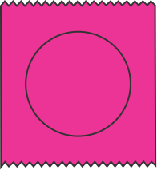
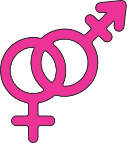

Нажимая «далее»,
ты подтверждаешь,
что тебе есть 18 лет
Секс
Мастурбация
Осторожно спойлеры!
Сериал:
Половое воспитание
1 сезон 3 серия
В нашумевшем подростковом сериале «Половое воспитание» главный герой — стеснительный старшеклассник Отис, чья мама работает секс-терапевтом, поддается уговорам новой знакомой Мейв и соглашается на «секс-терапию» в стенах школы, где выступает в роли терапевта, который выслушивает сексуальные вопросы, проблемы от учеников, выдавая им советы и помогая решить трудности в половой жизни.
Проблема эрекции возникает у Адама, сына директора школы. Он не может дойти до оргазма во время секса с девушкой, это его тревожит, он чувствует себя апатично.
Отис во время разговора узнает, что у Адама много отвлеченных мыслей во время секса, например, он переживает о том, что подумает его отец. Отис объясняет, что семья навязала ему идеальный образ, поэтому он всегда находится в напряжение, и советует взять ситуацию под контроль, а не позволять ей управлять им, говорит : «Неважно, что о тебе подумают, ты тот, кто ты есть». После этого разговора у Адама получается достигнуть оргазма!
ИНФО
По данным ВОЗ (Всемирная организация здравоохранения), опирающимся на многочисленные авторитетные мировые исследования, на эректильные нарушения жалуется каждый десятый мужчина
Сцена из сериала помогает понять, что все мы люди, у нас бывают разные проблемы, которые зачастую сами придумываем себе. Не нужно переживать, что у тебя не получается достигнуть оргазма, попробуй понять, что ты чувствуешь во время секса, о чем думаешь или что тебя волнует? Постарайся обсудить это с тем, с кем будет комфортно: партером, другом, психологом, врачом или семьёй.
В наших социальных сетях ты найдёшь истории и откровения ребят с похожим опытом. Мы создаём пространство, где можно делиться переживаниями, вдохновляться и чувствовать поддержку. Помни, что ты не одинок в своих чувствах и мыслях. Мы рядом и всегда готовы помочь. С любовью, команда <XOXO!
Секс
Секс
Беременность
Эре́кция (от лат. erectus —
стоящий вертикально) —
увеличение объёма полового
члена и его отвердение.